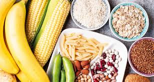
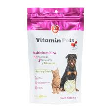
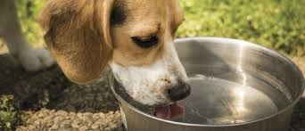
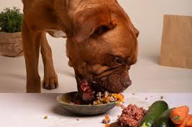
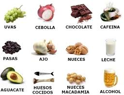
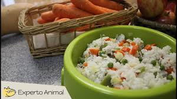
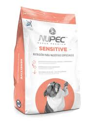

Proteínas: Necesitan proteínas de alta calidad (carne, pescado, huevos) para el mantenimiento de músculos, piel y pelo.
Grasas: Las grasas son una fuente importante de energía; proporcionan ácidos grasos esenciales para la salud de la piel y el pelaje.
Carbohidratos: Los carbohidratos (arroz, maíz, patatas) aportan energía y fibra para mejorar la digestión.

Vitaminas: Las vitaminas A, B, C, D, E y K son fundamentales para el funcionamiento del sistema inmunológico y los órganos.

Minerales: Calcio, fósforo, hierro y zinc son esenciales para el desarrollo óseo, la formación de glóbulos rojos y la salud general.
Agua: Es el nutriente más importante; representa entre el 60% y 70% de su peso corporal y es necesario para todos los procesos fisiológicos.

Alimentación de cachorros: Necesitan 3 a 4 comidas diarias, ya que tienen un metabolismo rápido y necesitan energía para crecer.
Alimentación de adultos: Generalmente se recomienda 1 o 2 comidas diarias, ajustadas a su tamaño y nivel de actividad.
Alimentación de perros mayores: Necesitan 2 comidas diarias con menor contenido calórico y mayor facilidad de digestión.
Alimentación de perros activos: Los perros de trabajo o con alta actividad física requieren más proteínas y grasas en su dieta.

Alimentos prohibidos: Chocolate (contiene teobromina tóxica), cebolla y ajo (dañan glóbulos rojos), uvas y pasas (pueden causar insuficiencia renal).

Otros alimentos prohibidos: Alcohol, café, huesos cocidos (pueden astillarse y dañar el tracto digestivo), aguacate (contiene persina tóxica).
Comida casera: Si se prepara en casa, debe ser balanceada y supervisada por un veterinario para evitar deficiencias nutricionales.

Comida húmeda vs seca: La comida húmeda tiene más agua y puede ser más palatable; la seca ayuda a mantener la salud dental al frotarse contra los dientes.
Suplementos: Solo deben administrarse bajo indicación veterinaria, ya que un exceso de vitaminas o minerales puede ser dañino.
Control de peso: Evita la sobrealimentación; calcula las porciones según las indicaciones del fabricante o el veterinario.
Cambios de dieta: Realízalos gradualmente durante 7 a 10 días para evitar problemas digestivos como diarrea o vómitos.
Alimentación y ejercicio: No ejercites intensamente a tu perro inmediatamente después de comer para prevenir torsión gástrica, especialmente en razas de pecho profundo.
Comportamiento alimenticio: Evita darle sobras de la mesa, ya que puede generar malos hábitos, obesidad y problemas digestivos.
Alimentos específicos: Algunos perros necesitan dietas especiales por problemas de salud (alergias, enfermedades renales, diabetes) prescritas por un veterinario.

Golosinas: Usa golosinas bajas en calorías y diseñadas para perros; pueden usarse como refuerzo en el entrenamiento, pero en cantidad limitada.
Alimentos para cachorros en crecimiento: Deben contener niveles adecuados de calcio y fósforo para prevenir problemas óseos en el futuro.
Dieta para perros con alergias: Se recomienda dietas con proteínas hidrolizadas o fuentes de proteínas que no haya consumido antes.
Conservación de alimentos: Guarda la comida seca en un recipiente hermético en un lugar fresco y seco; la húmeda debe refrigerarse después de abrirse.
Fecha de caducidad: Nunca le des comida caducada, ya que puede causar intoxicaciones o enfermedades gastrointestinales.
Apetito variable: Es normal que su apetito varíe ligeramente según el clima, el nivel de actividad o cambios emocionales; consulta al veterinario si la falta de apetito dura más de 2 días.
Comida de raza grande: Las dietas para razas grandes deben tener un contenido de calcio y fósforo equilibrado para prevenir displasia de cadera.
Comida de raza pequeña: Las razas pequeñas necesitan alimentos con partículas más pequeñas y mayor densidad calórica, ya que comen menos cantidad por comida.
Hidratación en calor: En épocas de calor o después de ejercicio intenso, asegúrate de que tenga agua disponible y considera darle alimentos con alto contenido de humedad.
Monitoreo de la digestión: Observa las heces de tu perro para evaluar si la dieta es adecuada; heces firmes y de color normal indican una buena digestión.
Evitar cambios bruscos en su comida. Si se cambia su alimento, debe hacerse poco a poco para evitar problemas digestivos.
Darles comida a la misma hora todos los días. Esto ayuda a que tengan una mejor digestión y hábitos más ordenados.
No darles huesos pequeños o cocidos. Algunos huesos pueden astillarse y causar daño en su estómago o garganta.
Elegir alimento según su tamaño y raza. No todos los perros necesitan lo mismo, por eso su comida debe adaptarse a sus características.
Evitar alimentos muy salados o condimentados. Estos pueden afectar su salud y causar enfermedades.
Revisar que el alimento esté en buen estado. Es importante que no esté caducado o en mal estado para evitar intoxicaciones.
No sobrealimentarlos. Darles más comida de la necesaria puede causar obesidad y problemas de salud.
Mantener limpio su plato de comida. Esto evita bacterias y mantiene una buena higiene.
No darles leche en exceso. Muchos perros no digieren bien la leche y puede causarles malestar.
Asegurarse de que mastiquen bien su comida. Esto ayuda a una mejor digestión y evita problemas estomacales.
Evitar darles comida fría o muy caliente. La comida debe estar a temperatura adecuada para no causar molestias.
Darles alimento rico en nutrientes. Una buena dieta debe incluir proteínas, vitaminas y minerales.
Observar si presentan alergias alimenticias. Algunos perros pueden reaccionar a ciertos alimentos y es importante detectarlo.